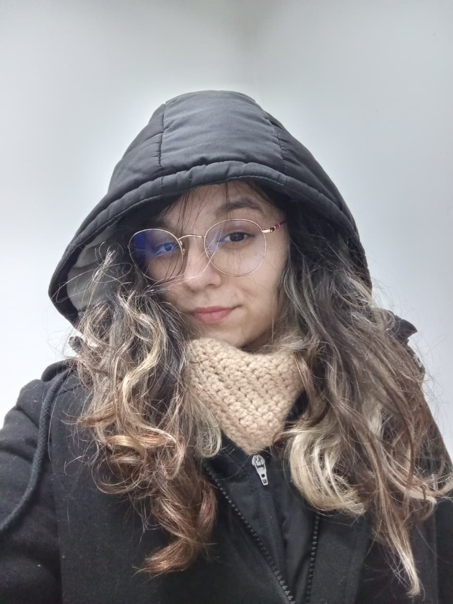

Oi, eu sou a Larissa! 💻
Estudante de Análise de Desenvolvimento de Sistemas apaixonada por tecnologia, Design e tudo que envolve criatividade.
Quando não estou codando ou estudando, gosto de jogar RPG de mesa, ver animes diversos mas em especial os de romance, leio mangá, e gosto de testar ferramentas de disign para aprimorar meu conhecimento no geral e até que gosto bastante, amo escutar músicas sou bem eclética e amo também meus gatinhos
Estou sempre em busca de aprender mais e me aprimorar, seja em programação, design ou qualquer área que envolva inovação e criatividade.
- 🎮 Jogadora de RPG e games casuais
- 🧠 Curiosa por inovação e startups
- 🧘♀️ Apaixonada por bem-estar e tecnologia humanizada
- 🤓Explorar tudo que o mundo geek nos oferece